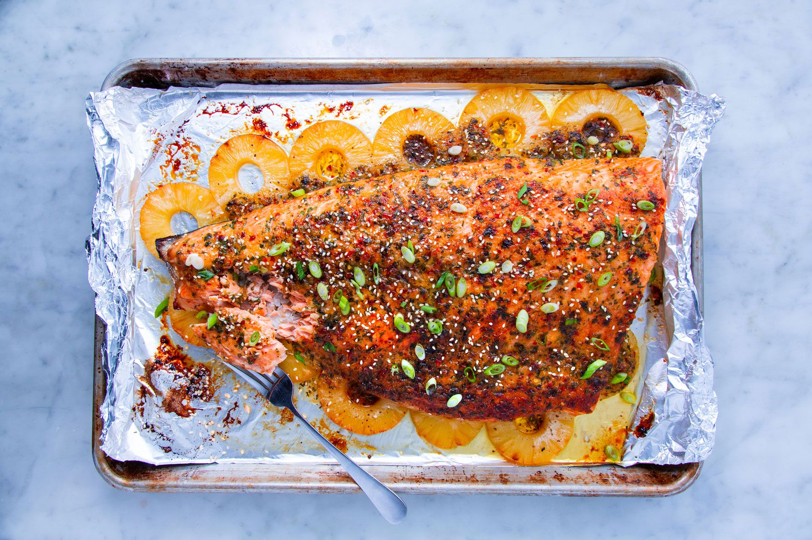

Recipes To Cook
Recipes To Cook Favorited Recipes
Favorited Recipes My Pantry
My Pantry Log Out
Log Out

Salmon + Pineapple + Forks
Looking for different ideas when it comes to the holidays? Fish can make a wonderful main dish even when the temperature drops! Learn how to make Baked Pineapple Salmon and wow your guests at the next dinner party!